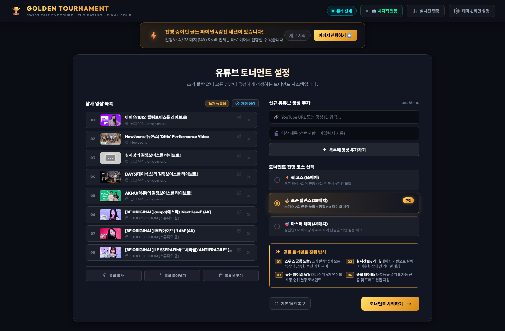
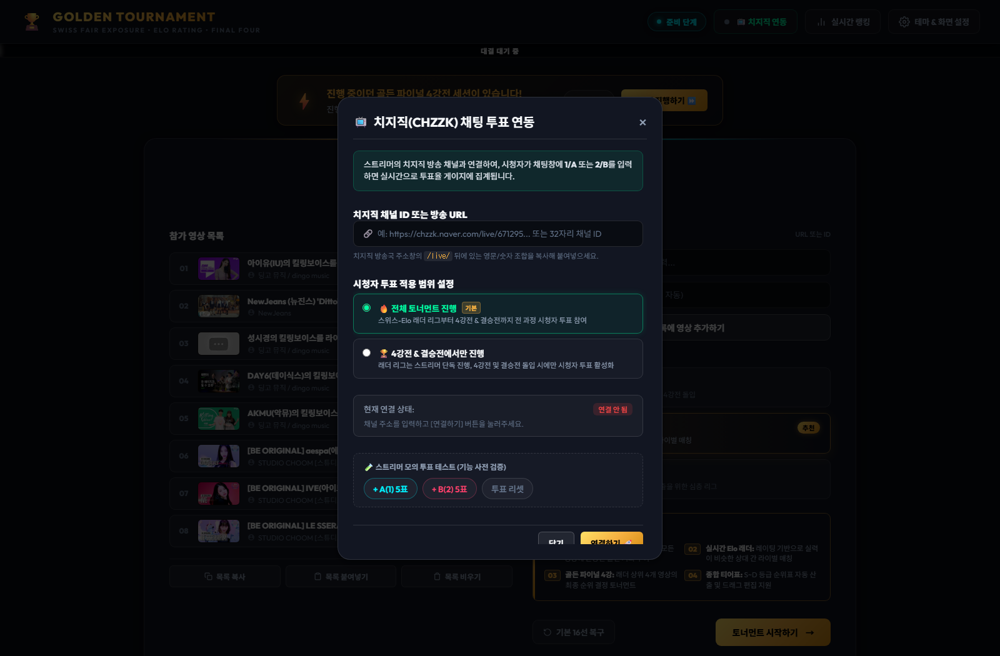
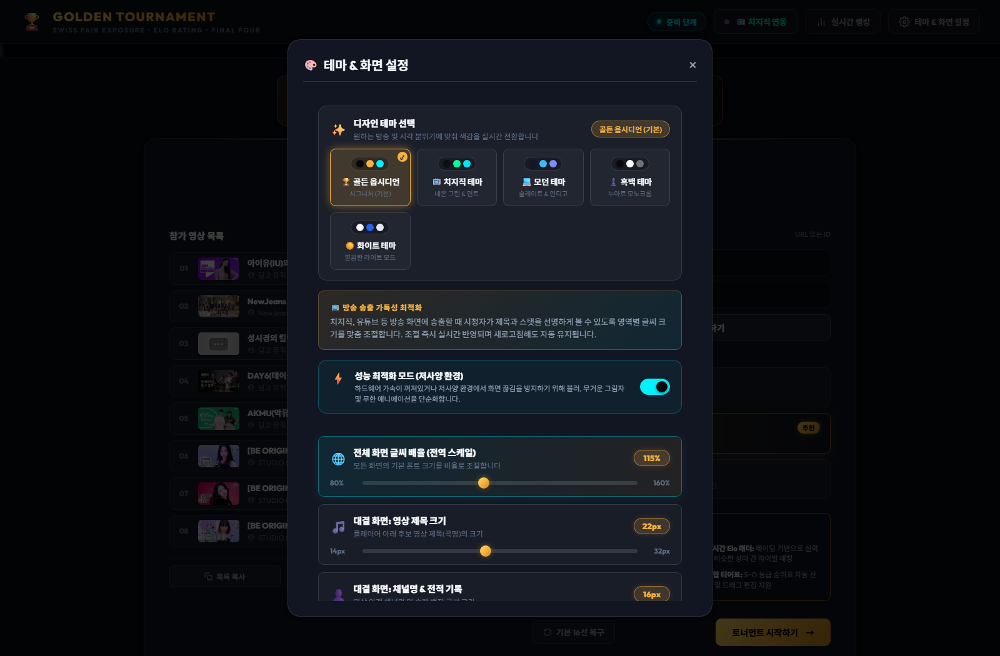
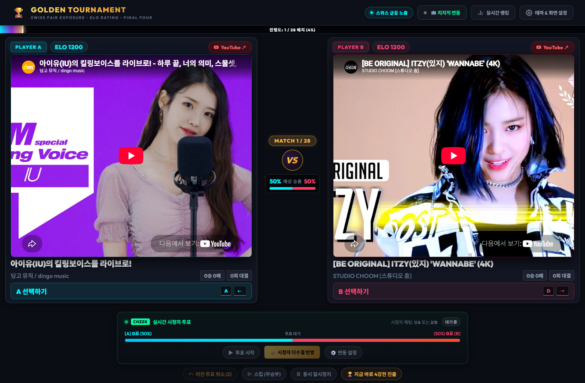
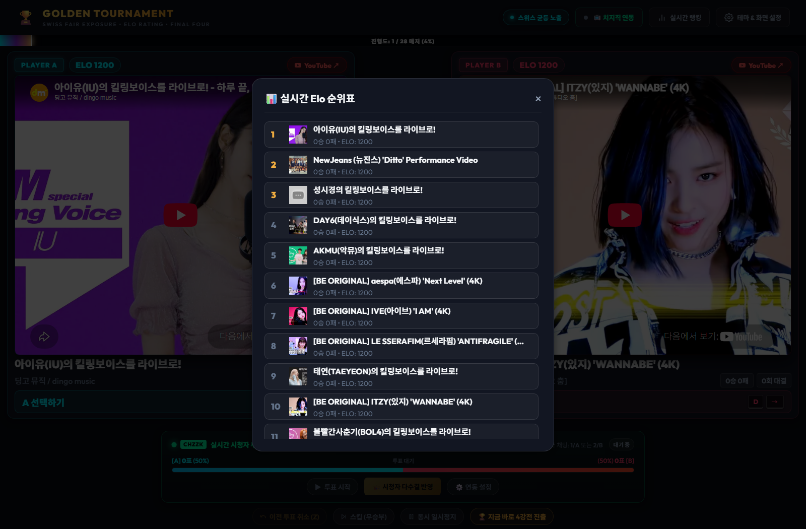
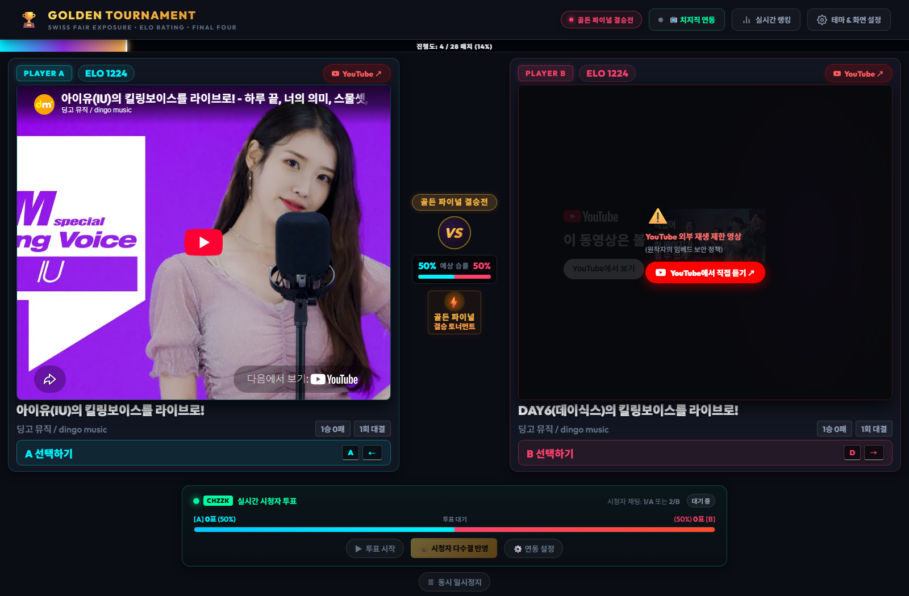
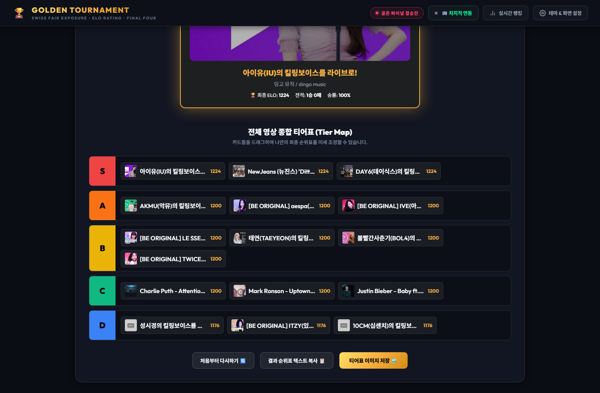

시스템 소개 및 핵심 차별점
기존의 토너먼트는 "1라운드에서 강자끼리 맞붙어 패배한 후보가 다시는 등장하지 못하는 문제(대진운에 따른 조기 탈락)"가 늘 존재했습니다. 픽리그는 단계별 하이브리드 알고리즘을 통해 모든 후보가 공정하게 가치를 인정받을 수 있도록 설계되었습니다.
준비 단계: 설정 및 커스터마이징 (Setup View)
2.1 메인 설정 화면 구조
토너먼트를 시작하기 전 참가 영상 목록을 점검하고, 진행 코스를 선택하며, 방송 연동을 마칠 수 있는 메인 대시보드입니다.
 🔍 클릭하여 고화질 확대
🔍 클릭하여 고화질 확대
• 상단 글로벌 헤더: 현재 단계 배지, 치지직 연동 설정, 실시간 Elo 순위표 조회, 테마/화면 크기 설정 모달이 위치합니다.
• 세션 복원 배너: 진행 중이던 세션이 있을 경우 상단에 노란색 번개 알림이 표시되며, 이어서 진행하기 ⏩ 버튼으로 즉시 복구할 수 있습니다.
• 좌측 후보 리스트: 등록된 영상의 썸네일, 제목, 채널명 확인 및 개별 수정/삭제 기능 제공.
• 우측 설정 컨트롤: 신규 유튜브 URL 입력 폼, 3가지 코스 선택 카드, 토너먼트 시작 버튼.
2.2 후보 영상 관리 & 재생 점검 기능
유튜브 URL이나 영상 ID를 입력해 손쉽게 후보를 추가할 수 있으며, 원작자의 보안 정책에 따른 외부 재생 차단(오류 150/101) 영상을 사전 감지할 수 있습니다.
2.3 진행 코스 선택 (퀵 / 표준 / 마스터)
참가 영상 수(N)에 비례하여 최적의 매치 수가 자동 연산되며, 방송 시간이나 목적에 따라 3가지 코스를 지원합니다:

🔍 클릭하여 고화질 확대| 코스 명칭 | 16선 기준 매치 | 진행 방식 및 특징 | 추천 상황 |
|---|---|---|---|
| ⚡ 퀵 코스 | 16 매치 | 모든 영상 2회씩 균등 출전 후 즉시 4강 파이널 돌입 | 방송 시간이 촉박하거나 빠른 승부를 원할 때 |
| ⚖️ 표준 밸런스 (추천) | 28 매치 | 배치고사 2회 출전 + 본선 라이벌 매칭 리그 | 가장 이상적이고 객관적인 순위 산출 (기본 권장) |
| 🎯 마스터 랭크전 | 45 매치 | 정밀한 랭크 점수(RP)와 세부 티어링을 위한 장기 심층 랭크전 | 시청자들과 호흡하며 디테일한 티어를 완성할 때 |
2.4 치지직(CHZZK) 실시간 방송 연동 설정
인터넷 방송 스트리머를 위해 치지직 공식 실시간 채팅 웹소켓 투표 연동을 기본 지원합니다.

🔍 클릭하여 고화질 확대
1. 헤더의 📺 치지직 연동 버튼을 클릭하여 설정 모달을 엽니다.
2. 본인의 치지직 채널 고유 ID(32자리 영문/숫자 해시값)를 입력합니다.
3. 투표 연동 범위를 선택합니다:
• 전체 라운드 적용: 1단계부터 결승까지 모든 매치에서 시청자 투표 진행.
• 4강전 & 결승전 전용: 래더 리그는 단독 진행하고, 4강 챔피언십부터 시청자 투표 활성화.
4. 연결하기를 누르면 실시간 시청자 채팅 1 또는 A, 2 또는 B 가 즉시 투표로 누적 집계됩니다.
• 원인: 네이버 치지직 REST API는 보안상 웹 브라우저의 직접 호출(CORS)을 차단합니다.
• 해결 방안:
- 로컬 실행 (가장 추천): 다운로드 후
start.bat을 실행하면 내장 로컬 프록시가 CORS를 100% 자동 해결합니다. - 무료 Cloudflare Worker 연결: Cloudflare 무료 Worker를 생성하여 모달 내
[⚙️ 고급: 치지직 CORS 프록시 설정]에 등록하시면 웹에서도 외부 서버 없이 즉시 작동합니다.
2.5 테마 & 방송 송출용 글씨/화면 설정
방송 송출 화면(OBS / XSplit) 또는 대형 모니터의 해상도에 맞춰 글자 크기와 화면 배율을 1픽셀 단위로 커스터마이징할 수 있습니다.

🔍 클릭하여 고화질 확대
• 5가지 디자인 테마: 골든 옵시디언(기본), 치지직 테마, 모던 테마, 흑백 테마, 화이트 테마
• 화면 배율 슬라이더: 90% ~ 140%까지 손쉬운 스케일 조절
• 원클릭 권장 프리셋: 치지직/유튜브 최적 권장값 버튼 클릭 시 방송 가독성이 극대화되는 황금 비율로 즉시 정렬
1단계: 공정 배치고사 (Placement Phase)
3.1 듀얼 플레이어 인터페이스 & 조작
대결이 시작되면 좌측(PLAYER A, Cyan)과 우측(PLAYER B, Rose) 듀얼 플레이어 아레나가 펼쳐집니다.

🔍 클릭하여 고화질 확대
• 상단 프로그레스 바: 현재 진행 중인 매치 번호와 전체 대비 진행률(%)이 실시간 표기됩니다.
• 중앙 디바이더: MATCH 번호 및 대결 중인 두 후보의 실시간 예상 승률(%) 게이지가 시각화됩니다.
• YouTube 새 탭 보기: 원작자의 보안 정책으로 임베드가 막힌 영상은 YouTube에서 직접 듣기 ↗ 버튼을 통해 새 탭에서 즉시 감상할 수 있습니다.
3.2 투표 조작 및 단축키 안내
마우스 조작뿐 아니라 키보드 단축키를 통해 방송 진행자가 시청자들과 소통하며 번개처럼 빠른 투표를 진행할 수 있습니다:
| 단축키 | 동작 | 설명 |
|---|---|---|
| A 또는 ← | 좌측(PLAYER A) 투표 | 시안 아레나 영상 승리 확정 및 Elo 레이팅 반영 |
| D 또는 → | 우측(PLAYER B) 투표 | 로즈 아레나 영상 승리 확정 및 Elo 레이팅 반영 |
| Z 또는 Ctrl + Z | 직전 투표 취소 (Undo) | 실수 투표 시 이전 매치 및 Elo 점수로 1초 롤백 |
| Space | 동시 일시정지 / 재생 | 양쪽 영상의 오디오/비디오 동시 컨트롤 |
3.3 직전 투표 취소 (Undo) 및 무승부 스킵
투표 직후 하단 툴바의 이전 투표 취소 (Z) 버튼이 은은한 네온 빛과 함께 활성화됩니다.
 🔍 클릭하여 고화질 확대
🔍 클릭하여 고화질 확대
3.4 실시간 Elo 순위표 확인
대결 진행 중 언제라도 상단 헤더의 📊 실시간 랭킹 버튼을 누르면 현재까지의 전체 순위와 실시간 ELO 점수를 팝업 창으로 즉시 확인할 수 있습니다.

🔍 클릭하여 고화질 확대2단계: 본선 랭크 레이스 (Rank Race Phase)
4.1 실시간 승률 예측 게이지 연산
배치고사 단계가 끝나면 랭크 점수(RP)가 비슷한 라이벌끼리 맞붙는 본선 랭크 레이스가 진행됩니다. 두 후보의 점수 차이에 따라 중앙의 승률 게이지가 실시간 연산되어 시각화됩니다.
 🔍 클릭하여 고화질 확대
🔍 클릭하여 고화질 확대
4.2 치지직 시청자 채팅 투표 & 다수결 반영
대결 화면 하단의 치지직 시청자 투표 패널을 통해 실시간 시청자 참여 방송을 진행할 수 있습니다:
• ▶ 투표 시작: 매치 시작과 함께 투표를 개시합니다.
• 실시간 득표수와 점유율이 60FPS 애니메이션 게이지로 실시간 시각화됩니다.
• 👑 시청자 다수결 반영: 스트리머가 시청자의 선택에 따라 원클릭으로 해당 후보에게 자동 승리를 부여합니다.
4.3 상위 1~4위 즉시 4강전 진출 기능
방송 시간이 부족하거나 래더 판도가 일찍 결정된 경우, 하단의 🏆 지금 바로 4강전 진출 버튼을 누르면 현재 시점의 상위 1~4위를 확정 짓고 즉시 결승 토너먼트로 돌입할 수 있습니다.
3단계: 골든 파이널 4강 토너먼트 (Golden Final 4)
5.1 4강 대진표 트리 (1위 vs 4위, 2위 vs 3위)
래더 리그를 통과한 최상위 4개 명곡의 최종 우승 결정전 브래킷입니다. 승리한 노래 슬롯에서 결승전 슬롯으로 황금 네온 베지어 곡선(Bezier Path)이 실시간 점등됩니다.
 🔍 클릭하여 고화질 확대
🔍 클릭하여 고화질 확대
5.2 최종 결승전(Grand Final) 챔피언 결정전
4강 1경기(1위 vs 4위)와 4강 2경기(2위 vs 3위)에서 승리한 두 후보가 최종 챔피언 자리를 놓고 격돌합니다.

🔍 클릭하여 고화질 확대4단계: 명예의 전당 & 인터랙티브 티어표 (Tier Maker)
6.1 최종 챔피언 우승 헌정 세션
결승전 투표가 끝나는 즉시 챔피언 헌정 세리머니가 열리며, 우승곡의 최종 ELO 레이팅, 전적, 승률 및 공식 유튜브 풀버전 링크가 제공됩니다.
 🔍 클릭하여 고화질 확대
🔍 클릭하여 고화질 확대
6.2 마노사바 스타일 인터랙티브 드래그 & 드롭 티어표
모든 참가 영상이 최종 순위와 ELO에 맞춰 S, A, B, C, D 등급 행에 자동 정렬됩니다. 마우스 드래그로 카드를 끌어다 등급을 변경하거나 순서를 마음껏 미세 조정할 수 있습니다.

🔍 클릭하여 고화질 확대6.3 결과 순위표 텍스트 복사 및 고화질 PNG 이미지 저장
• 결과 순위표 텍스트 복사 📋: 커뮤니티, 카페, 디스코드에 공유할 수 있는 마크다운 순위표 텍스트를 원클릭으로 클립보드에 복사합니다.
• 티어표 이미지 저장 🖼️: 브라우저의 HTML5 Canvas 렌더링 엔진을 통해 워터마크가 포함된 선명한 PNG 이미지 파일(golden-tournament-tier.png)로 즉시 다운로드합니다.
스트리머 특화 기능 및 성능 최적화 가이드
8. 프로그램 소유권 & 저작권 및 공식 문의처
픽리그의 소프트웨어 지식재산권, 유튜브 콘텐츠 저작권 준수 정책 및 공식 문의 창구를 안내합니다.
• 프로그램 소유자: nai-com
• 공식 문의처: njs1541@naver.com
• 이용 권한: 개인 엔터테인먼트, 스트리머 및 크리에이터 방송 송출, 커뮤니티 토너먼트 진행 목적으로 누구나 자유롭게 이용할 수 있습니다. 단, 소스코드의 무단 복제 및 영리 목적의 상업적 무단 도용·재배포는 엄격히 금지됩니다.
• 본 웹 프로그램은 영상을 서버에 저장·변환·다운로드하지 않으며, YouTube 공식 IFrame Player API 규정을 철저히 준수하여 인라인 임베드 스트리밍만을 중개합니다.
• 영상 재생으로 발생하는 모든 조회수, 시청 시간 및 광고 수익은 원작자의 유튜브 채널로 온전히 귀속됩니다.
• 공식 문의 메일: njs1541@naver.com
• 문의 권장 말머리:
-
[저작권/삭제요청] 영상 제목 및 유튜브 URL 포함-
[버그/개선문의] 기능 오작동 증상 및 재현 방법-
[기타/협업] 방송 협업 제안 및 일반 문의